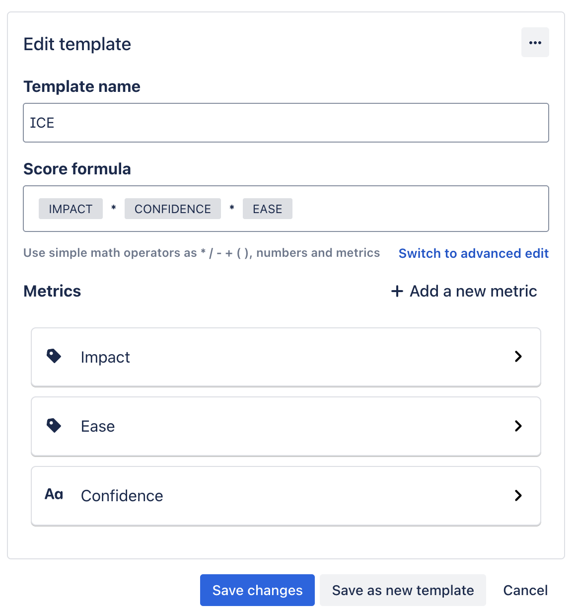
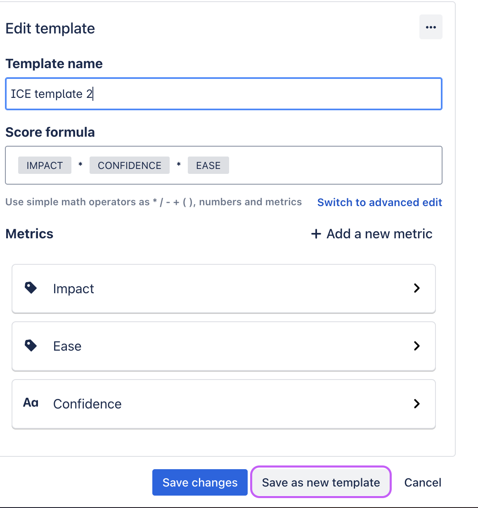

Modify formulas in templates
Overview
This document provides instructions on altering template formulas and reverting them if necessary while retaining metric values.
Update the current template formula
Go to the project tab displaying metrics.
Click Customize.
Modify the formula as needed, such as removing specific metrics or adjusting calculations.
Save changes to the adjusted template.
The app recalculates the score without losing previously selected metrics.
Ensure accuracy by comparing updated metrics and scores with the originals.

Duplicate template for tests
Choose the project for testing.
Click Customize.
Create a new template name, indicating it's for testing.
Modify the formula as needed, such as removing specific metrics or adjusting calculations.
Click Save as new template.
Confirm that modifications to the duplicated template do not impact other projects using the original.
